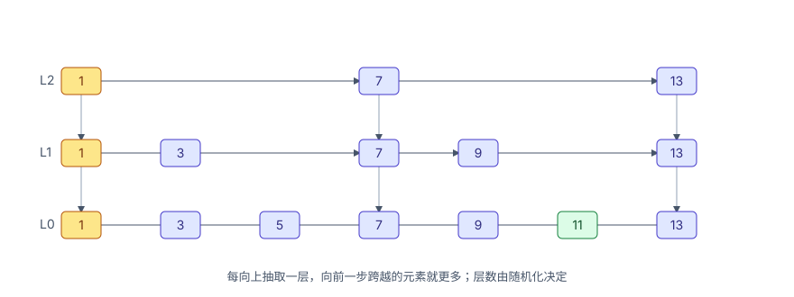
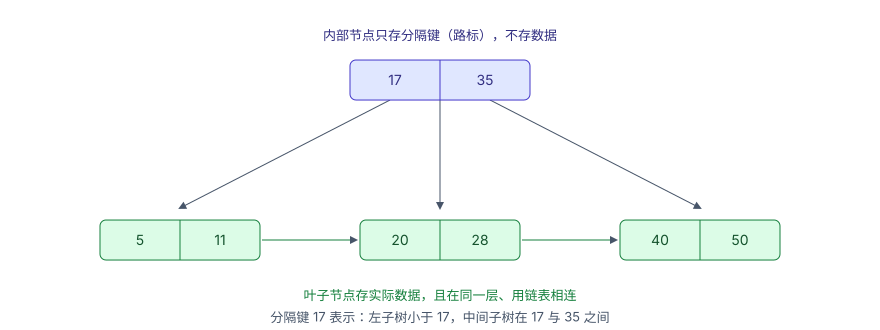
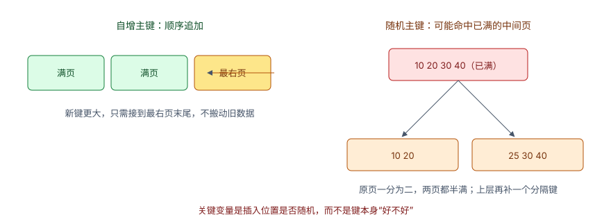

跳表与 B+ 树：从内存到磁盘的有序存储
有序集合既要能按 key 查找，又要能按范围列举。内存里可以给链表加索引、用随机化换取简洁；磁盘上则要把树高压到最低，让节点填满磁盘页。这是同一个问题的两种答案。
为什么需要新的有序结构
很多场景需要一种有序映射：既能按 key 快速查找，又要能按顺序做范围查询（“列出分数在 80 到 90 之间的用户”）。哈希表快，但无序，无法范围查询；平衡二叉搜索树能做，但每个节点只存一个 key，树高较大。
树高为何重要？因为它直接决定“查找时需要访问多少个节点”。在内存里，多访问几个节点只是多几次内存读；但在磁盘上，每个节点的访问可能是一次磁盘 I/O，两者代价相差悬殊。数量级示意（教学示意，具体数值随硬件而变）：内存访问约百纳秒级，而机械磁盘的随机读约毫秒级。因此磁盘结构的第一目标往往是尽量降低树高、减少 I/O 次数。
| 结构 | 节点存多少 key | 约 100 万元素的树高（教学示意） |
|---|---|---|
| 平衡二叉搜索树 | 1 | 约 20 |
| B+ 树（每节点约 500 key） | 数百 | 约 3 |
把“每个节点只放 1 个 key”变成“每个节点放很多 key”，树高就能大幅下降——这正是 B+ 树的出发点。而在内存场景里，还有另一种更轻的思路：跳表。先看内存这一侧。
跳表：给有序链表加索引
链表查找是 O(n)，因为只能一个个往后走。跳表的思路很直观：在底层链表之上，再抽出几层“快速通道”。越上层节点越稀疏，每一步跨得越远。查找时从最高层开始向右走，一旦下一步会超过目标，就下降一层再继续。

以查找 11 为例：从 L2 出发，1 之后是 7（小于 11，继续），7 之后是 13（大于 11，不能再往右），于是从 7 降层；L1 上 9 之后是 13（超过），从 9 再降层；L0 上 9 之后正好是 11，命中。总步数远少于从头走到尾。
def search(self, value):
node = self.head
for level in range(self.level, -1, -1):
while node.forward[level] and node.forward[level].value < value:
node = node.forward[level] # 本层能向右就向右
node = node.forward[0] # 降到底层再检查一格
return node is not None and node.value == value范围查询也很直接：先定位到下限，再沿底层链表往右收集，直到超过上限。这一步是顺序遍历，没有回溯开销。
走一遍跳表查找
在图中这棵跳表（L0：1,3,5,7,9,11,13）上查找一个值，观察它在各层怎么走。
插入与随机层数
跳表最特别的地方在于：它不靠旋转维持平衡，而是靠随机化。每个新节点的层数通过“抛硬币”决定：每抛到正面就多一层，直到抛到反面为止。
def random_level(self):
level = 0
while random.random() < 0.5 and level < self.max_level:
level += 1
return level这样得到的层数服从几何分布：大多数节点只有 0 层，少部分较高，极高的极少。因此期望上每层只保留大约一半节点，总层数约为 log₂n。查找的期望步数是 O(log n)，范围查询是 O(log n + 结果数)。
这里必须分清“期望”与“最坏”：O(log n) 是对随机化求期望的结论，不是每一次运行的最坏情况。理论上随机化可能给出很差的层数，但概率随 n 增大而极低；只要随机源可靠，实际表现就很稳。这也意味着两件事不同：理论保证（如平衡树的严格上界）与高概率保证（跳表）。
插入时先记下每层“最后一个小于新值的节点”（即 update 数组），再按新节点的层数逐层接入。
new_node = SkipListNode(value, new_level)
for i in range(new_level + 1):
new_node.forward[i] = update[i].forward[i]
update[i].forward[i] = new_nodeRedis 为什么用跳表
Redis 的有序集合（ZSet）底层是跳表 + 哈希表的组合：哈希表负责“按成员查分数”的 O(1) 平均查找，跳表负责“按分数排序、范围查询”。两者配合，同时满足“查某人分数”和“取某分数区间的前 N 名”。
更常见的问题是：为什么用跳表而不是红黑树？这属于工程取舍，而不是理论最优性：
- 实现更简单：跳表插入/删除不需要旋转与重新染色，代码更短，出错面更小。
- 范围查询更直接：跳表底层就是有序链表，找到起点后沿底层向右即可；树做范围查询需要中序遍历，带回溯与栈开销。
- 便于调试与并发：跳表的结构可以直观看出来，而无锁/并发实现通常也比平衡树更易拆分。
要注意：这些是定性的工程理由，并不代表跳表在任何指标上都优于红黑树。两者查找/插入的渐进复杂度同阶（期望 O(log n)），差异主要在实现成本、范围查询的常数以及可调试性上。
B+ 树：多路与叶子链表
磁盘结构的第一目标是降低树高。B+ 树的做法是让每个节点存储很多个 key（多路），一个节点对应一个磁盘页，一次 I/O 就能把整页读进来。路数越大，树越矮，查找所需的 I/O 次数越少。

三个要点：内部节点只存 key（用来决定向哪个孩子走），数据只存叶子，叶子同一深度且互连。前两点让单个节点能装下几百个 key，压低树高；第三点让范围查询可以在找到起点后沿叶子链表顺序扫描，而不必反复回到上层。
与内存结构相比，B+ 树的关键不在“渐进复杂度更低”，而在每次 I/O 搬运的有效数据更多：把多个 key 和一个磁盘页对齐，是它相对二叉搜索树的真正优势。
聚簇索引：自增主键 vs UUID
InnoDB 的聚簇索引把完整数据行就存在 B+ 树的叶子里；二级索引的叶子存的是主键值，所以通过二级索引查数据时，要先拿到主键、再回聚簇索引取行（俗称“回表”）。主键的选择因此直接影响数据的物理布局。

页分裂的代价是多方面的：已满页要搬一半数据到新页（额外的写），新页被填到一半左右（空间利用率下降），且分裂位置附近的后续查询可能要多一次 I/O。这些是机制层面的必然结果，而非某个基准测试的偶然表现。
因此一个常见的工程建议是：如果没有特殊理由，用自增主键而不是随机 UUID，让新行尽量追加到最右页。但也要知道它的边界：
- 自增主键在分布式、多写入点、需隐藏业务量的场景下可能不合适；此时可用雪花 ID 等大致递增的方案。这里的性能差异只能用机制解释，具体倍数随实现与硬件而变，本章不给出固定数字。
- 页分裂不是“错误”，而是 B+ 树维持节点装满度的正常行为；只是频率应尽量降低。
LSM 树与边界
B+ 树优化的是“读”：树矮、范围查询快。但它的写入需要在磁盘页上定位并修改，属于随机写。如果写入量很大，另一种结构更占便宜：LSM 树（Log-Structured Merge-tree，RocksDB、LevelDB、Cassandra、HBase 的存储引擎）。
LSM 树的核心是把随机写变成追加写：新数据先写进内存的有序结构（MemTable，常用跳表）并记一条 WAL 日志用于故障恢复；MemTable 写满后整体刷成一个不可变的 SSTable 文件；后台再把多个 SSTable 归并成大文件（compaction），顺便丢掉被覆盖的旧值。
代价在读：一个 key 可能散在多个 SSTable 里，需要逐个查找。为减少无用的查找，LSM 树常用布隆过滤器先做一次“肯定不存在”的快速判断。所以 B+ 树与 LSM 树的取舍可以概括为一句话：
| 结构 | 擅长 | 代价 | 典型场景 |
|---|---|---|---|
| B+ 树 | 读、范围查询（树矮、叶链） | 写入随机、可能页分裂 | 关系型数据库索引（OLTP） |
| LSM 树 | 写入（顺序追加） | 读放大、需要后台合并 | 写密集型、时序/日志存储 |
回到本章主线：内存里，跳表用随机化换来简洁与范围查询友好；磁盘上，B+ 树用多路节点把树高压到最低；写入为主时，LSM 树用顺序写换取吞吐。三个结构面向的是三个不同的瓶颈，而不是谁“吊打”谁。
带走三个判断准则
- 跳表的 O(log n) 是对随机化求的期望，不是每次运行的最坏情况保证。
- B+ 树的优势来自“多 key/页 + 叶链”：降低树高减少 I/O，叶子链表加速范围查询。
- 自增主键之所以好，是因为插入位置顺序、少触发页分裂；换成随机键就要接受碎片与额外 I/O。
继续学习与校验资料
- Skip list — 随机层数与期望复杂度分析
- B+ tree — 与 B 树的区别、叶子链表
- Log-structured merge-tree — MemTable、SSTable 与 compaction
- 运行参考：
examples/skip_list.py；测试：tests/test_skip_list.py